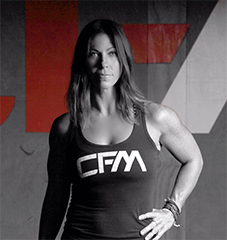
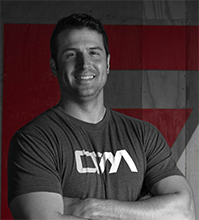
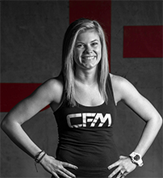
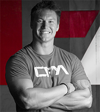
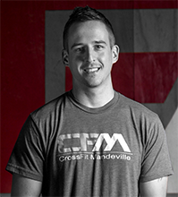

CrossFit is the principal strength and conditioning program for many police academies, tactical operations teams, military operations units, and other elite professional athletes worldwide. CrossFit delivers a fitness regime that is broad, general, and inclusive.
Our speciality in CrossFit is not specializing in any one area. Combat, survival, many sports and life, in general, reward this kind of fitness and, on average, punish the specialist. CrossFit is designed to be universally scalable, meaning it’s the perfect application for any individual regardless of fitness experience.
We don’t change our programming for each individual, but we do scale the load and intensity. We use the same routine for elderly individuals as we do professional athletes.
Courtesy of CrossFit, Inc.
Get Started!Our templates are updated regularly so they don't break.
You can use this theme as is, or you can make changes!
We update dependencies to keep things fresh.
You have to make your websites with love these days!
ginger (head coach)
A native of Texas, Ginger comes to us with a background in running and cycling and was a D1 collegiate athlete. Her son, Cam, also plays D1 soccer in South Carolina. Although her career is in the corporate world, she is an artist/metalsmith with a concentration in jewelry design. She has varied interests outside of the box including frequent travel and her dogs Mav and Hoss.
As a Managing Partner of CFM, athlete, and overall curious human she works diligently to continue expanding her knowledge of CrossFit and functional movement through additional certifications, research, and her own training. One of her favorite aspects to CrossFit is its scalability and progressive nature. "When you can scale workouts but still derive an intensity that makes the workout relative to all levels of athletes, that's so much more appealing and successful. On the other side of that, I respect how well versed you must be in all of the movements in order to achieve well rounded athleticism. You can lift heavy all day long but if you can't run an 800 or do a virtuous hollow rock, you're impeding your own progress(and vice versa)."
Her advice for anyone would be never sacrifice form and technique for a PR or a "good" score. Listen to your body. Mobilize. Listen to your coach. Be patient and don't hesitate to use scales and progressions while you are learning to become proficient. Great movement takes time.
brad (head coach)
Brad is a Level 2 CrossFit Trainer, CrossFit Olympic Lifting Certified Trainer, CrossFit Gymnastics Certified Trainer, Crossfit Mobility Trainer, CrossFit Endurance Trainer, and a USAW Sports Performance Coach. From Bossier City, Louisiana, Brad played high school football and baseball at Evangel Christian Academy before earning a spot as kicker for Northwestern State University. He served six years active duty in the U.S. Army as well as two Tours in Iraq during Operation Iraqi Freedom. Brad then followed his military career by several years as a firefighter with St. Tammany Parish Fire Protection District No. 1. In addition to being a coach, Brad is also an AdvoCare Independent Distributor.
In Brad’s CrossFit experience, “Shared Agony and Laughter” will unite a group of people and forge bonds like those seen only in military arenas. He believes that implementing CrossFit as the centerpiece for achieving fitness and cultivating a supportive and encouraging environment are the keys to a successful and thriving affiliate.
jacob (head coach)
Originally from Cordova, Tennessee, Jacob is a Level 2 CrossFit Trainer. A St. Tammany Parish District 2 firefighter, he is passionate about health and exercise. Jacob has always had an interest in athletics, playing soccer and running track throughout his younger years and high school. For Jacob, the most gratifying aspect of coaching is helping others overcome obstacles, realize their full potential and achieve personal goals.
In addition to being a firefighter and a CrossFit coach, Jacob is also an Independent Distributor for AdvoCare. Jacob studied business at the University of Mississippi where he met his wife Elise. The couple resides in Madisonville with their two young daughters, Mackenzie and Avery.
lacey
Lacey is a CrossFit Level 1, CrossFit KIDS and CrossFit Gymnastics Trainer. In addition to coaching both adults and kids, Lacey oversees all social media and marketing at the box, she organizes all of our special events and helps all of the coaches in developing their special programs at the box.
Born and raised in Baton Rouge, Lacey graduated from LSU with a Bachelor’s in Business at the end of 2012. For several years she helped teach dance to young girls at the studio where she took dance classes. Her passion for coaching kids has led her to us today. Lacey now resides in Madisonville with her husband, Lon.
“I wake up every day excited to go to work! I am beyond blessed to call CFM my home and my extended family. Coaching the kids in our community is a privilege that I do not take lightly and surrounding myself with our amazing community is something I cherish every day!”
dustin
A native of Slidell, Louisiana, Dustin grew up participating in sports from a young age. He played football and ran track at Slidell High School. He attended Southeastern Louisiana University for 2 years and while there walked on the football team.
True to his passion for helping people and his community, Dustin has been a firefighter in Slidell for 8 years. He is certified as an EMT, with goals of furthering his career as a paramedic in the next couple of years. Dustin began doing CrossFit in2010 because he was looking for a workout that would “challenge” him. CrossFit lived up to its claims and shortly after, he obtained his Level 1 certification and began coaching CrossFit. Dustin’s favorite thing about coaching CrossFit is the opportunity to teach people new skills they never imagined they could do, and helping them have fun along the way!
Casey
Casey is a CrossFit Level 1, CrossFit Level 2, and CrossFit Gymnastics trainer. He is originally from Pittsburgh, PA and grew up playing soccer, football, running track. While in the Army in 2010, he wanted to go beyond the standard military fitness routine, so he started CrossFit and has not looked back. In addition to being a CrossFit coach, he now works with St. Paul’s High School in Covington as a Certified Athletic Trainer.
“It’s an honor to coach others and help them reach their fitness goals. I encourage everyone, whether you are trying to compete, step out of your comfort zone, get in shape, or even make friends, to try CrossFit.”
Ready to start your next project with us? That's great! Give us a call or send us an email and we will get back to you as soon as possible!
123-456-6789